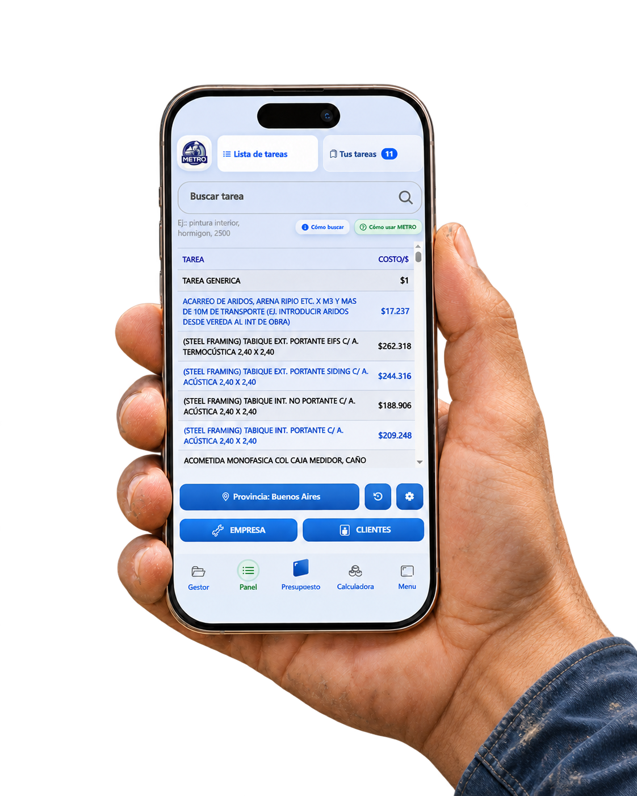
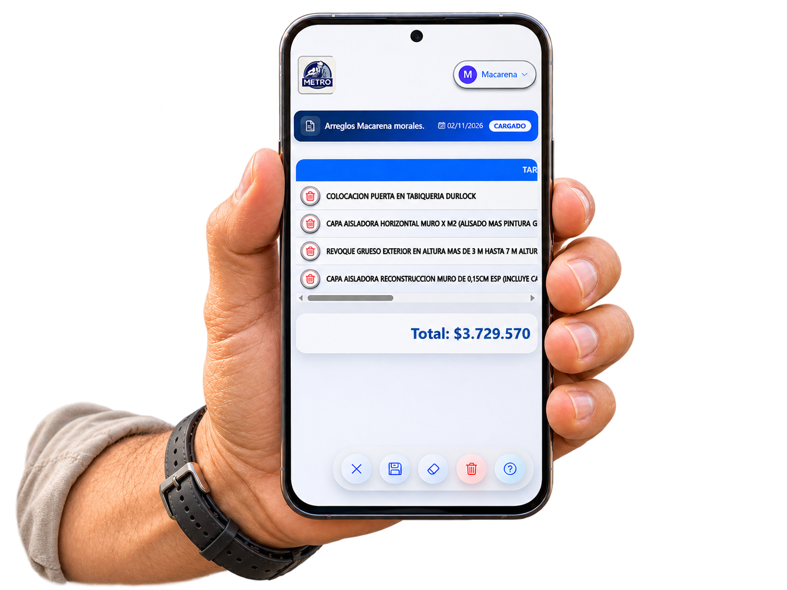
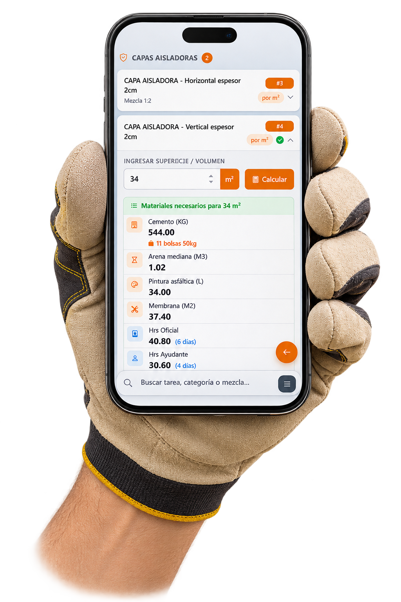
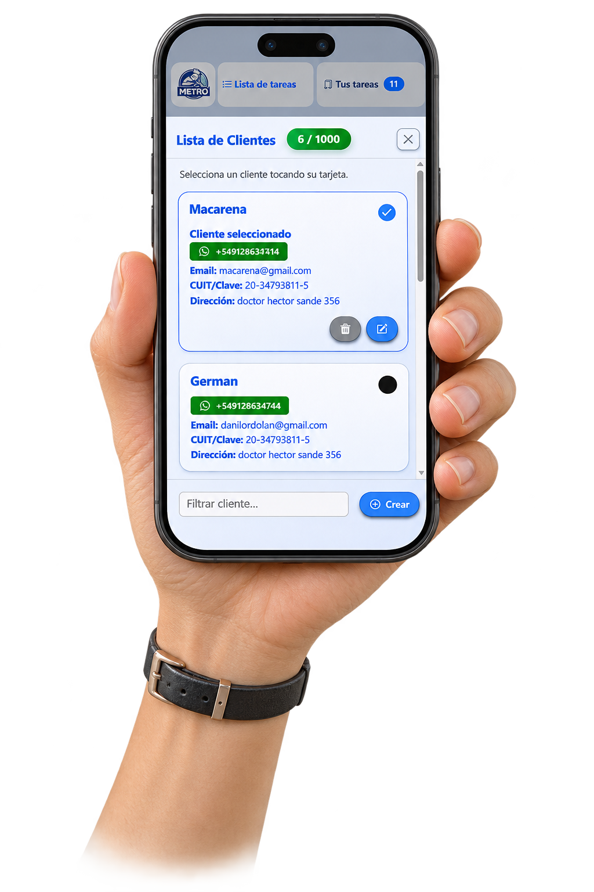
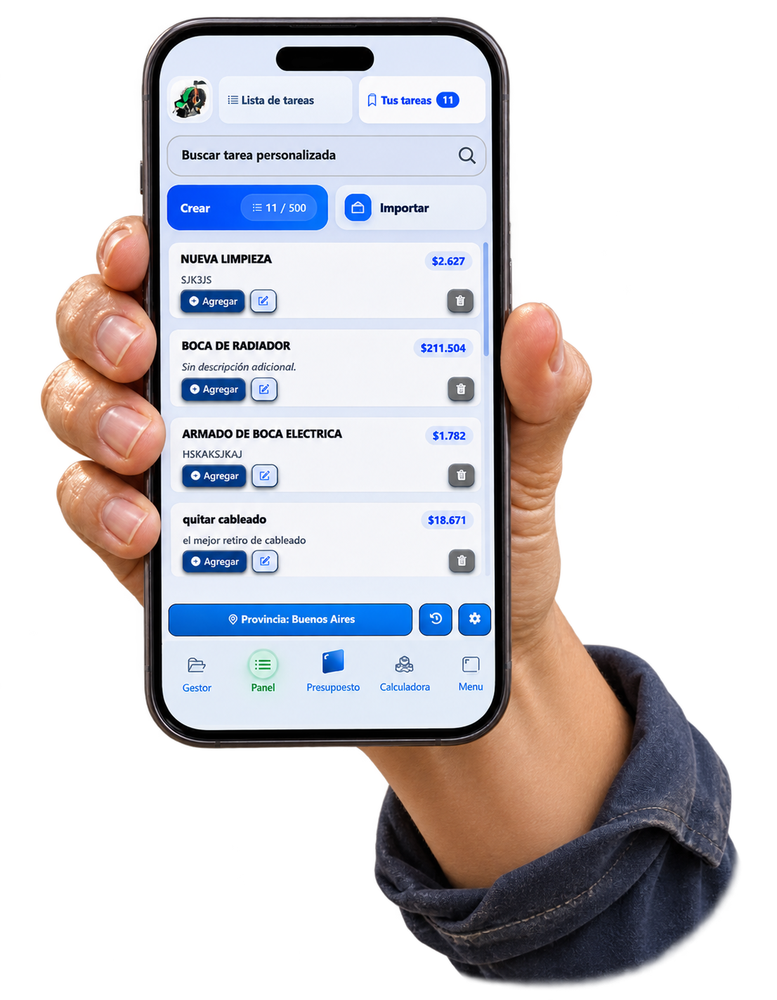
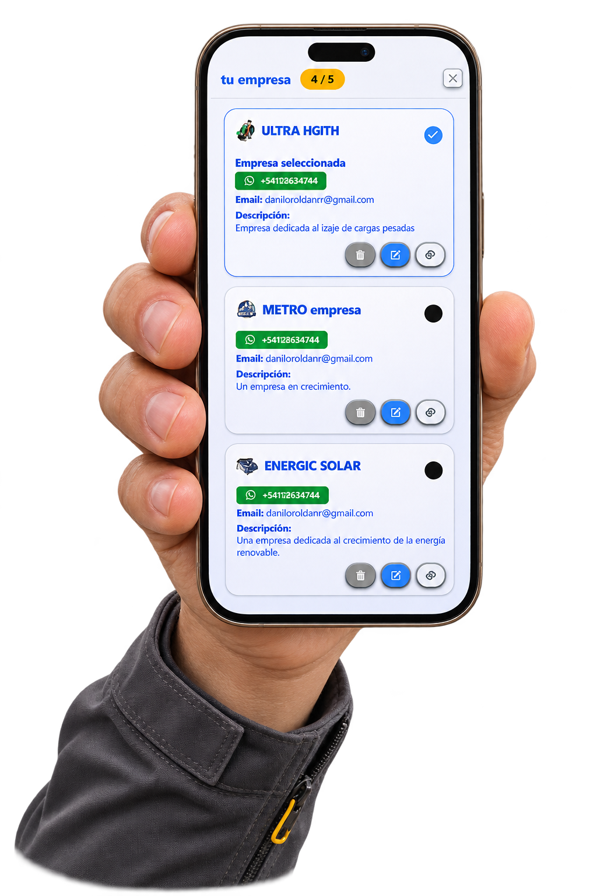
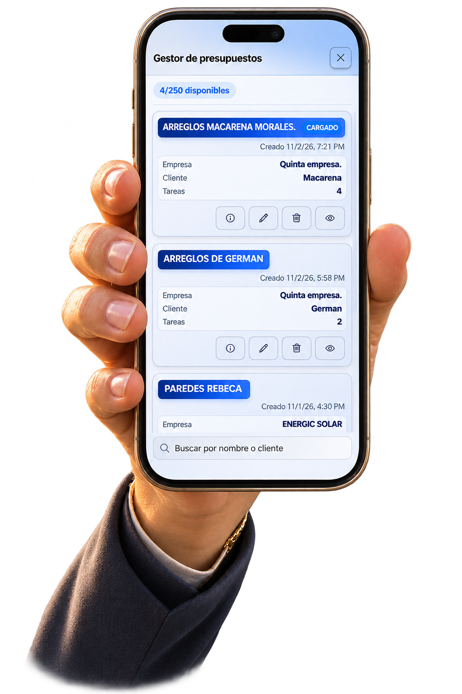

La forma más clara de trabajar una obra
Menos tiempo haciendo cuentas.
Más tiempo haciendo crecer tu trabajo.
Metro te ayuda a crear presupuestos profesionales, calcular materiales y organizar clientes y empresas desde un solo lugar.
Sin tarjeta de crédito · Acceso desde cualquier dispositivo
HECHO PARA QUIENES CONSTRUYENPresupuestos más clarosDecisiones más rápidasObras más ordenadas
METRO EN TU BOLSILLO
Tu obra también se mueve.
Trabajá desde cualquier lugar.
Revisá presupuestos, clientes, empresas y materiales desde una experiencia pensada para acompañarte en cada visita a obra.
Metro en obraTodo lo importante, siempre a mano.






TODO EN UN SOLO LUGAR
Todo lo que necesitás
para construir con claridad.
Presupuestos profesionales
Armá presupuestos claros, completos y listos para compartir con tus clientes.
Crear un presupuestoMateriales sin adivinar
Calculá cantidades para cada tarea y trabajá con información de tu región.
Calcular materialesTodo bajo control
Organizá clientes, empresas y presupuestos para encontrar todo cuando lo necesitás.
Ordenar mi trabajoPARA PROFESIONALES DE LA CONSTRUCCIÓN EN ARGENTINA
Tu experiencia construye.
Metro te ayuda a mostrarla.
Ya seas albañil, arquitecto, maestro mayor de obras o tengas una empresa de construcción, Metro se adapta a tu manera de trabajar en Argentina.
Empezar a trabajar mejorPREGUNTAS FRECUENTES
Todo claro antes
de empezar.
¿Qué es Metro?
Metro es un software argentino para crear presupuestos de obra, calcular materiales y organizar clientes y empresas desde cualquier dispositivo.
¿Para quién está pensado?
Está pensado para albañiles, arquitectos, maestros mayores de obra, contratistas y empresas de construcción que trabajan en Argentina.
¿Puedo calcular materiales de construcción?
Sí. Metro permite consultar y calcular materiales para distintas tareas de obra con referencias adaptadas al trabajo local.
¿Necesito instalar un programa?
No. Metro funciona desde el navegador y podés acceder desde una computadora o un celular.
¿Cómo empiezo?
Ingresá a Metro, elegí la opción de prueba y comenzá a crear tu primer presupuesto.
TU PRÓXIMA OBRA EMPIEZA ACÁ